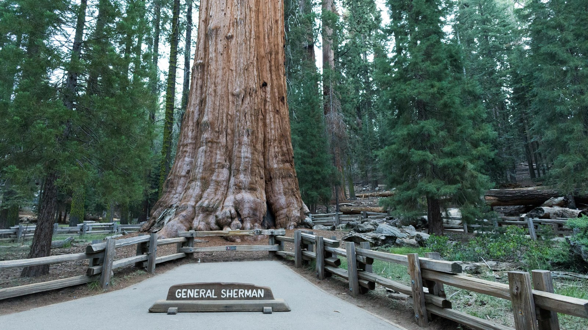
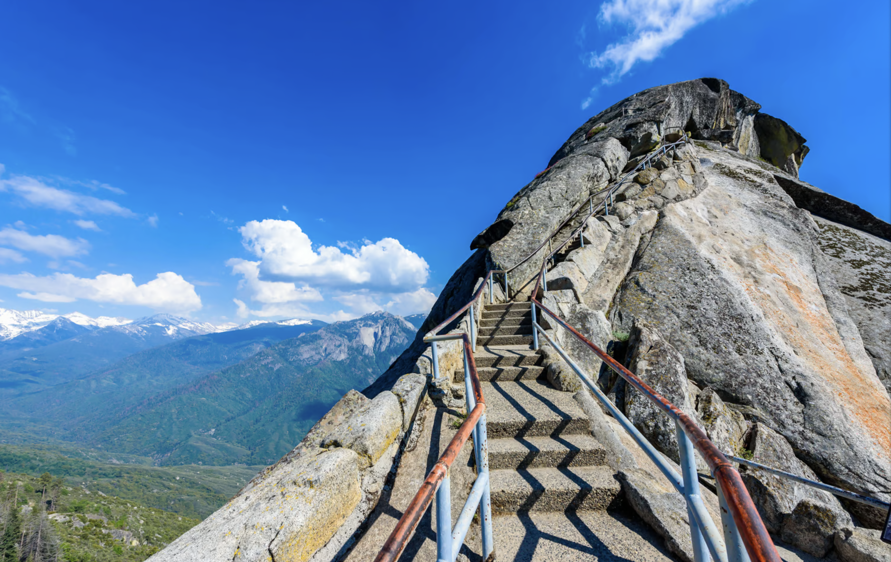

Discover the wonder of Sequoia National Park, home to the world's largest trees and endless forest views. Walk among ancient giant trees, explore peaceful trails, and take in the power of the forest all around you. Sequoia is truly a place you'll never forget.
General Sherman Tree
The General Sherman Tree is the largest tree on Earth by volume, standing an incredible 275 feet tall and over 36 feet wide at its base. Estimated to be around 2,200 years old, it's a living link to ancient history. Taking the short scenic walk to the General Sherman Tree is a must-see experience that captures the awe-inspiring scale of nature.

Crystal Cave
Crystal Cave is a stunning marble cavern tucked beneath the Giant Forest in Sequoia National Park. Guided tours can take you through intricate passageways filled with glittering formations and smooth, polished rock. The cave stays cool year-round as well!
Moro Rock Trail
The Moro Rock Trail is a short but exhilarating hike leading to the summit of Moro Rock, a massive granite dome. The trail is just 0.4 miles round trip, but its 350+ stone steps make it a steep and thrilling climb. Along the way, railings guide you past incredible views of the Sierra Nevada and the surrounding valleys. The effort is well worth it for the 360-degree panorama of the park at the top!

Crescent Meadow
Crescent Meadow is a peaceful, lush meadow nestled among towering sequoias. Also called the “Gem of the Sierra,” it's a great spot for a leisurely walk or a quiet picnic surrounded by nature. You might spot deer grazing in the meadow, colorful birds, or even a black bear wandering in the forest. Trails around the meadow offer chances to see wildlife and historic sites, like the fallen log cabin of conservationist Hale Tharp.